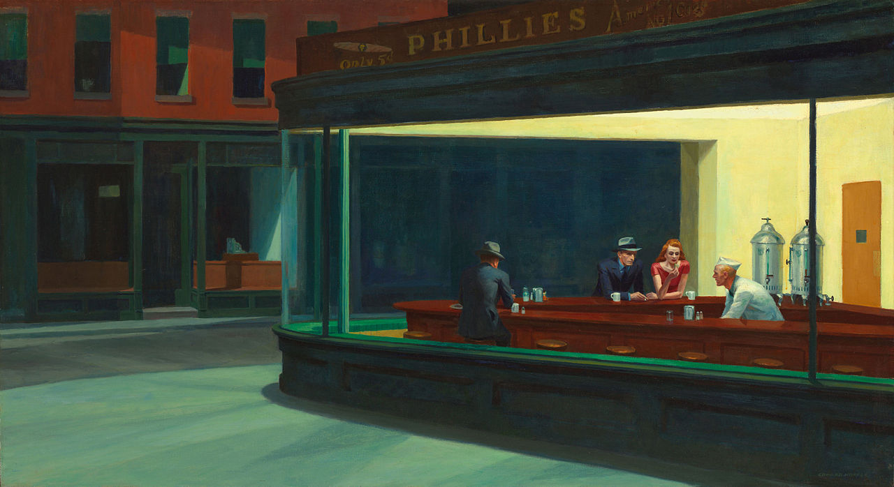
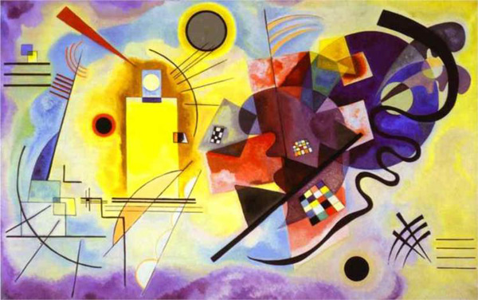
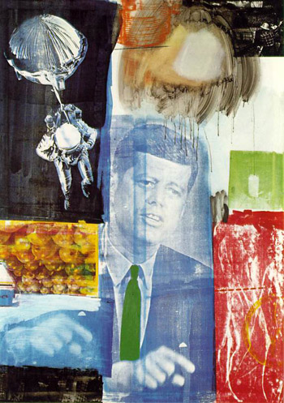
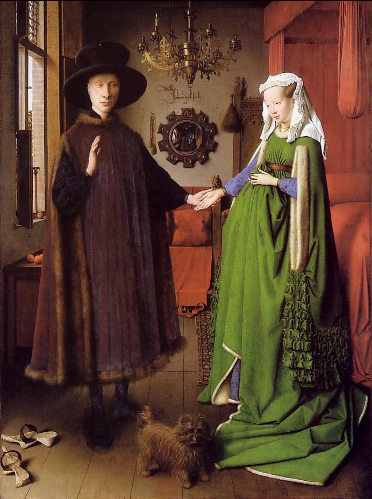
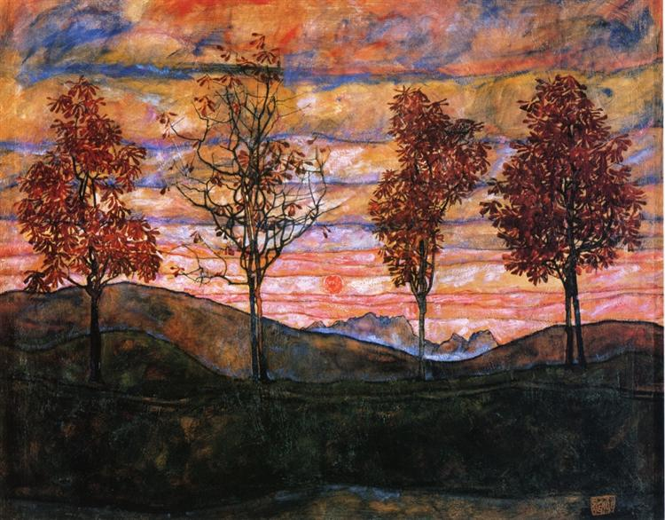
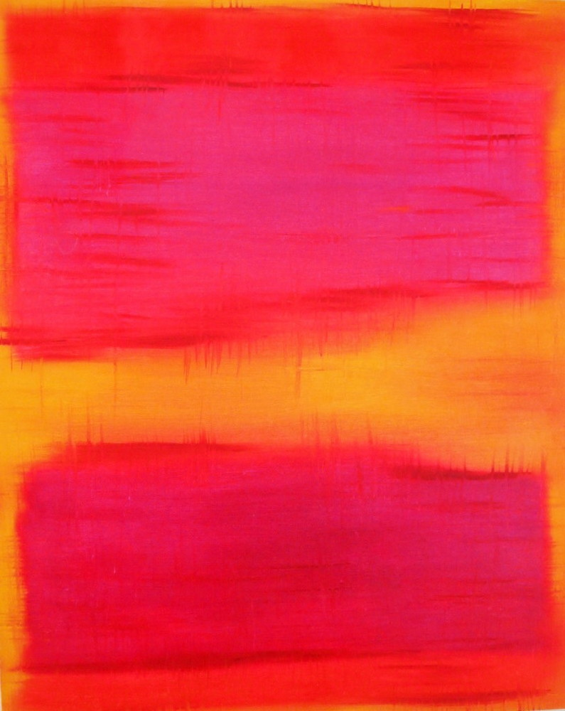

seek hue

Nighthawks (1942)
Edward Hopper

Yellow, Red, Blue (1925)
Wassily Kandinsky

The Starry Night (1889)
Vincent Van Gogh

The Scream (1893)
Eduard Munch

Retroactive I (1963)
Robert Rauschenberg

Girl with a Pearl Earring (1665)
Johannes Vermeer

Arnolfini Portrait (1434)
Jan Van Eyck

Four Trees (1917)
Egon Schiele

Abstract Color Painting (1956)
Mark Rothko